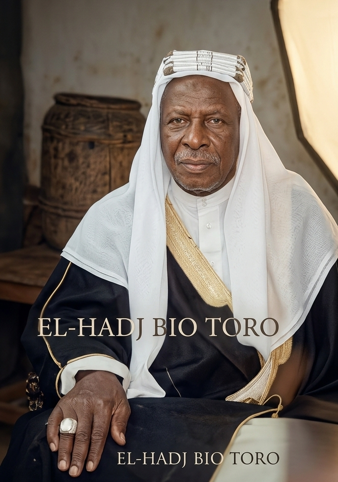
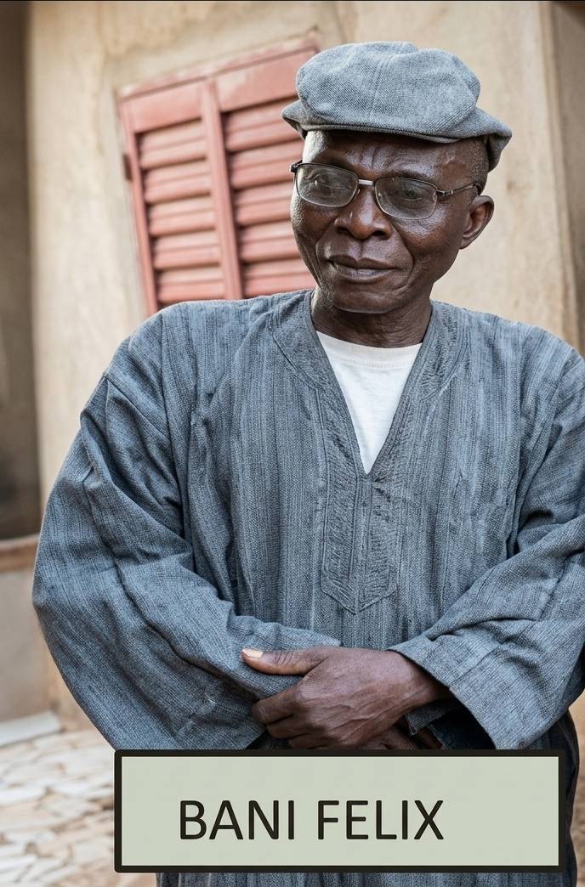
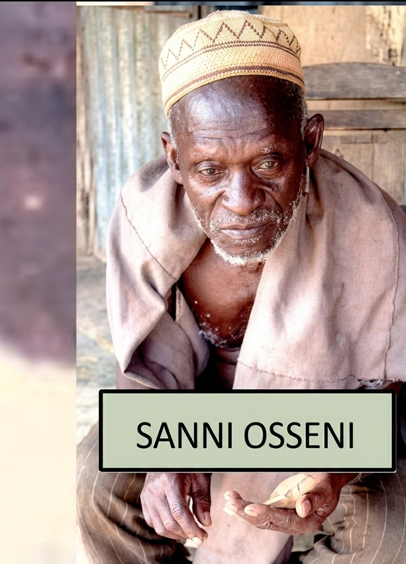
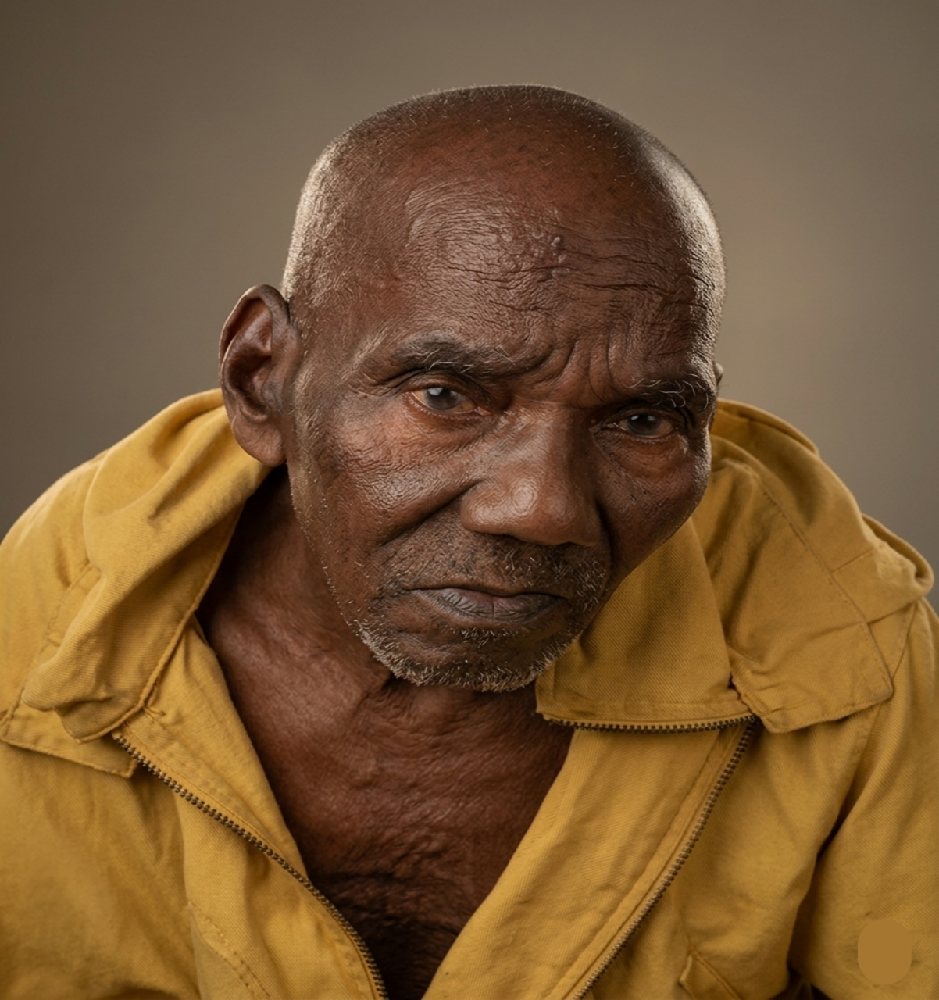

OR0U YO
OROU YO, né vers 1896 à Tokey Missirou Bansou,
était un grand cultivateur reconnu pour son courage, sa sagesse et son
attachement au travail. Homme calme et laborieux, il considérait le travail
comme une valeur essentielle permettant de préserver la dignité humaine.
Son histoire est marquée par son union avec Gotoungo (Gniré),
princesse wassangari du clan des Tossou de Ounet. Leur rencontre et leur
appartenance commune à la même lignée royale ont conduit à une décision de
la cour royale de Ounet qui officialisa leur mariage.
De cette union naquirent plusieurs enfants, notamment
Orou, Sabi Yamadéni, Gnon Magahia, Bio Toro, Félix et Sanni Tailleur,
qui ont marqué l'histoire familiale par leurs différents talents.
Orou Yo rendit l'âme vers 1975 à Tokey Missirou Bansou,
où il fut enterré.
Fils d'un prince wassangari originaire de Bouay (Bembèrèkè),
issu du clan des Tossou Bouay de la cour royale de Nikki,
Orou Yo appartient à une grande lignée historique wassangari ayant laissé
un héritage culturel important.

GOTOUGO (GNIRÉ)
GO KÙN TUKO (GNIRÉ), princesse wassangari de
Ounet, est connue sous ce surnom qui signifie
« Nul n'est étranger ». Elle fut une femme remarquable par son
humilité, sa douceur, sa générosité et son hospitalité légendaire.
Elle accueillait tous les étrangers sans distinction d'origine ou d'ethnie,
les traitant comme les membres de sa propre famille. Sa maison était un lieu
d'accueil et de partage, comme l'illustre le séjour du vieux Peulh
Kouri qui vécut plusieurs années auprès d'elle.
Grande artisane du fil traditionnel, commerçante et guérisseuse reconnue,
elle possédait un savoir-faire précieux qui a marqué plusieurs générations.
Issue d'une grande lignée familiale, elle transmit l'image d'une femme de
paix et de bonté. Elle rendit l'âme en 1999 à Tokey-Banta,
laissant derrière elle un héritage fondé sur l'amour du prochain et
l'hospitalité.

BIO TORO
BIO TORO (IDRISSOU), surnommé « TORO MISSE », est né vers
1933 à Tokey. Troisième fils de Orou Yô,
il fut un grand artisan reconnu pour son talent exceptionnel en
menuiserie et charpenterie, un savoir-faire qu'il transmit
à plusieurs générations de sa famille.
Respecté pour son courage, sa rigueur et sa générosité, il occupa une place
importante dans la communauté de Tokey-Banta. Après sa conversion à
l'Islam en 1980, il prit le nom d'Idrissou,
effectua le pèlerinage à La Mecque en 1997 et devint
l'imam de Tokey.
Homme de paix et de valeurs, il consacra sa vie à sa famille et à la
transmission de son héritage culturel. Marié à quatre femmes, il eut
plusieurs enfants de la génération des Wuré.
Il rendit l'âme le 28 mars 2014 à Tokey et fut enterré
au cimetière musulman aux côtés de son épouse Azia Fati.

BANI FÉLIX
SANNI OSSÉNI (TAMOU), né vers 1941, est
le dernier fils du couple Orou Yô et Gotougo. De la
génération des Kpaï, il fut un grand tailleur traditionnel
et un cultivateur exceptionnel, reconnu pour son savoir-faire dans le
labour de la terre.
Formé à la couture à Parakou auprès de
Sabi Yarou, il marqua également son époque par son talent
unique dans l'utilisation de la charrue, réalisant des sillons parfaitement
droits et réguliers. Il transmit ce savoir à ses proches, notamment
Bio Alassane et Sabi Bouaima.
Attaché à son identité culturelle wassangari, il fut rasé à
Ounet en 2015 et reçut le nom de Tamou.
Marié à trois femmes, il eut plusieurs enfants de la génération des
Wuré. Il rendit l'âme le dimanche 10 mai 2020
vers 18 heures et fut enterré à Batran.

SANNI OSSÉNI
FÉLIX (KPAÏ) – ZIMÉ, né vers 1937 à Tokey,
est le quatrième fils de Orou Yô. Grand menuisier et
charpentier, il passa une grande partie de sa vie à Goumori
où il développa son savoir-faire auprès de son frère
Bio Toro et des prêtres catholiques.
De confession chrétienne, il fut un homme de paix, de générosité et
d'hospitalité. Considéré comme un « TUKO SARI », il
accueillait tout le monde sans distinction et consacra sa vie à aider
son prochain. Travailleur et courageux, il construisit lui-même sa maison
et transmit ses valeurs à sa famille.
Malgré sa foi chrétienne, il resta attaché à son identité culturelle
wassangari. En 2015, il fut rasé à la cour royale de
Ounet et reçut le nom de Zimé.
Marié à trois femmes, il eut plusieurs enfants de la génération des
Wuré. Il rendit l'âme le 14 janvier 2021
à Goumori, où il fut enterré dans la paix du Christ.

SABI GOURÉ
De la génération des pkaï, il est l’enfant du petit frère de Orou Yô.
Cultivateur, il fabriquait aussi les paniers traditionnels appelés ‘’Bileru’’ en
Baatonou. Son père s’appelait Sabi. Ce dernier a été pris de force pendant la
révolution pour les services militaires, mais il n’est plus revenu. Ce qui a poussé
Orou Yô à récupérer son enfant Sabi Gouré de Soudou. Il s’est marié à deux
femmes suivant l’ordre suivant :
-FATOUMA : ses enfants sont : Orou, Sabi, Bio Arouna, Bani Séïdou, Alima,
Wahabou, Issiaka, Bana Bou (Amida) , Penon Mounira, Orou Bou (Aminou).
-BIBA : ses enfants sont : Moustapha, Roukaya , Samitatou, Bachirou, Taïba,
Bani Nassirou.
Tous ses enfants sont de la génération des Wuré.
Le vieux a rendu l’âme le 11 Juin 2020 à Tokey Banta où il a été enterré au
cimetière des musulmans.
Résumé
La famille OROU YO s'est distinguée par son unité, sa solidarité et
son excellente organisation. Les enfants étaient élevés sans distinction entre
les différentes branches familiales, favorisant un fort esprit de fraternité.
Grâce à une répartition équilibrée des responsabilités, chaque membre
contribuait au bien-être de la famille, faisant d'elle un véritable modèle de
cohésion à Tokey, Batran et Goumori.
Attachée à ses traditions tout en respectant les différentes croyances
religieuses, la famille a su préserver son identité culturelle wassangari.
Plusieurs de ses membres ont également joué un rôle important dans le
développement social, traditionnel et politique de leur communauté.
L'héritage laissé par les anciens repose sur des valeurs essentielles :
l'union, le travail, le respect, la solidarité et la fraternité.
Ces principes continuent d'inspirer les générations actuelles afin de
préserver l'intérêt supérieur de la famille et d'assurer son développement.
Sources et personnes interrogées
Ounet :
Sero Sirou : interrogé le 10 Janvier 2023 à Ounet
Sabi Tègnor Bio Sama : 10 Janvier 2023 à Ounet
Kouma (Fils ainé de de Sorokou) 11 Février 2023 à Ounet
MaÏmou, membre le Famille Gotougo : interrogée 11 Février 2023 à Ounet
TOUNDO, ancien CA de Ounet : interrogé le 11 Février 2023 à Ounet
Dombouré :
Gbira : l’un des agés de Dombouré interrogé le 10 Janvier 2023 à Dombouré
SAKA (père de Bagui menuisier) : interrogé le 10 Janvier 2023 à Dombouré
Badou et sa grande sœur aveugle Yaho : interrogées le 10 Janvier 2023 à
Dombouré
Goumori Bodaha :
Sabi Gangodo : interrogé 10 Janvier 2023 à Goumori Bodaha
Baké Bata, épouse de BANI FELIX interrogée 14 Juin 2024
Banikoara :
Baké Parfaite interrogée le 26 octobre 2022
Safia, Mère de Issifou méti, interrogée le 4 Janvier 2023 à tokey banta.
Bignon Missiré interrogée le 26 Octobre 2022 à Tokey Banta
BIO MALLAN Orou interrogé le 26 Octobre 2022 à Wètèrou
Délégué BARAGA Hilère interrogé 12 février 2023 à Tokey Banta
BARAGA Michel interrogé 20 Janvier 2023 à Tokey Banta
BARAGA Sabi Mounou interrogé 3 février 2023Azia Bankoré à Batran le 21 Février 2024
Boukari Soumanou, délégué de Batran interrogé le 08 Mars 2024 dans sa ferme
Les personnes âgées et chercheuses de la famille OROU YO
Assistance : BIO TORO Orou Séïdou alias Gounou Yérima , BIO TORO Bani
Gouda Nourou- Dine et OROU YO Bio Christian